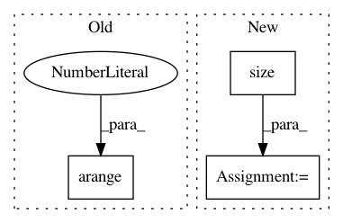

f76a4dabb4cd38ee58d01a35c5b511e224d060d2,gpytorch/lazy/sum_batch_lazy_tensor.py,SumBatchLazyTensor,_get_indices,#SumBatchLazyTensor#Any#Any#,99
Before Change
def _get_indices(self, left_indices, right_indices):
batch_indices = self.tensor_cls(self.batch_size()).long()
torch.arange(0, self.batch_size(), out=batch_indices.data)
batch_indices = batch_indices.unsqueeze(1).repeat(1, len(left_indices)).view(-1)
left_indices = left_indices.unsqueeze(1).repeat(self.batch_size(), 1).view(-1)
right_indices = right_indices.unsqueeze(1).repeat(self.batch_size(), 1).view(-1)
res = self.base_lazy_tensor._batch_get_indices(batch_indices, left_indices, right_indices)
After Change
return res
def _get_indices(self, left_indices, right_indices):
batch_indices = torch.arange(0, self.base_lazy_tensor.size(0), dtype=torch.long, device=left_indices.device)
batch_indices = batch_indices.unsqueeze(1).repeat(1, len(left_indices)).view(-1)
left_indices = left_indices.unsqueeze(1).repeat(self.base_lazy_tensor.size(0), 1).view(-1)
right_indices = right_indices.unsqueeze(1).repeat(self.base_lazy_tensor.size(0), 1).view(-1)
res = self.base_lazy_tensor._batch_get_indices(batch_indices, left_indices, right_indices)
In pattern: SUPERPATTERN
Frequency: 3
Non-data size: 3
Instances
Project Name: cornellius-gp/gpytorch
Commit Name: f76a4dabb4cd38ee58d01a35c5b511e224d060d2
Time: 2018-09-17
Author: gpleiss@gmail.com
File Name: gpytorch/lazy/sum_batch_lazy_tensor.py
Class Name: SumBatchLazyTensor
Method Name: _get_indices
Project Name: rusty1s/pytorch_geometric
Commit Name: 85cbf941bf757c7f7e6c6f76cfa85c750945a44d
Time: 2017-11-18
Author: matthias.fey@tu-dortmund.de
File Name: examples/cora.py
Class Name:
Method Name:
Project Name: mariogeiger/se3cnn
Commit Name: 99e8a69bad6b3bd641a27d1cbfddc4e71e6fb821
Time: 2019-07-05
Author: geiger.mario@gmail.com
File Name: se3cnn/point_utils.py
Class Name:
Method Name: neighbor_difference_matrix